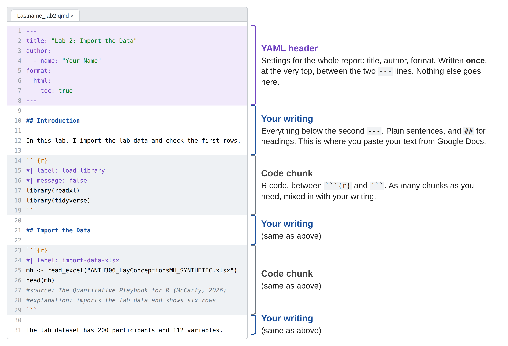

---
title: "title your report here"
subtitle: "insert subtitle here"
date: "`r Sys.Date()`"
author:
- name: "your name"
email: youremail@binghamton.edu
affiliation:
- name: Binghamton University
attributes:
corresponding: true
abstract: |
TBD goes here
keywords:
- insert keyword 1
- insert keyword 2
- insert keyword 3
- insert keyword 4
- insert keyword 5
format:
html:
toc: true
toc-depth: 3
number-sections: true
fig-width: 8
fig-height: 4
code-fold: false
code-overflow: wrap
embed-resources: true
theme: cosmo
pdf:
toc: true
number-sections: true
colorlinks: true
fig-width: 6
fig-height: 4
geometry:
- top=1in
- bottom=1in
- left=1in
- right=1in
---
5 Start a Quarto Markdown Document
How to start a report with YAML and code chunks
Abstract
This chapter introduces researchers to creating and structuring Quarto markdown documents (.qmd) for reproducible research. Researchers learn to set up new Quarto documents, configure metadata using YAML headers, and write formatted text using markdown syntax. The chapter demonstrates proper code chunk structure with descriptive labels, detailed figure captions, and execution options. Students explore essential practices including file naming conventions, environment management, and documentation through code sources and explanations. By the end of this chapter, researchers will understand how to create professional, well-documented Quarto reports that integrate narrative text with embedded R code, following reproducible research standards for public health manuscripts.
Keywords
quarto, YAML, markdown, code chunks, reproducible research, file management
ResourcesResources:
quarto
ImportantRequired: reports are
.qmd files
The AIM report was written and saved as a word document (.docx) format, which is different than a Quarto report (.qmd). Your RD Report and Final Report will be .qmd files. Every code chunk should include a label, a source, and an explanation. Code chunks that create figures should also include a figure caption (fig-cap) and alternative text (fig-alt). You will do your writing in a Google Doc and then paste your writing into RStudio, within a .qmd Quarto Markdown document.
In RStudio, you should see the Source and Visual editor options in the top left corner of the script editor. You can toggle back and forth between the two options.
Source shows the file as plain text with line numbers:
#for headings,**bold**, and code chunks between```{r}and```. Use it when you are writing or fixing code, because you can see every character and every line number that an error message refers to.Visual shows the same file the way it will look when rendered: real headings, bold text, bullets, and a gray box for each code chunk. Use it when you are writing or pasting paragraphs. Nothing changes in the file when you switch; it is the same
.qmd, shown two ways.
This playbook shows code in Source view, so if a screenshot looks different from your screen, check which button is selected.
5.1 What a Quarto Document Is
A traditional R script (.R) involves code throughout the entire script. A Quarto Markdown Document (.qmd) integrates the R programming language with markdown language into a single document that can include a mix of code and written content. We use report.qmd and other .qmd files to write a reproducible manuscript using written text within embedded code chunks.
You have three places to write code in RStudio: the console (runs now, never saved), an .R script (saved, code only, used here for install.R), and a .qmd document (saved, code and writing together, rendered to a web page). R Software compares them. For your reports, the answer is always the .qmd:
ImportantImportant: Write your analysis in a
.qmd file, not in the console
In this course, all of the code for your reports goes in code chunks inside your .qmd file. Here is why.
- It can be checked. Your instructor, your teammates, and later readers can open your
.qmdand see exactly how every number and plot was made. Code typed in the console leaves no record, so nobody can review it, and neither can you. - It can be published. Rendering a
.qmdturns your code, results, and writing into one web page with a URL, which is what you submit (Publish). A console session cannot be published. - It can be redone. Render runs every chunk from a fresh start, so your report proves that the analysis works from top to bottom. That is what reproducible means, and it is the point of Chapter 1.
- It keeps the explanation next to the code. A
.qmdholds your Methods and Results paragraphs beside the code that produced them, so the writing and the numbers cannot drift apart.
Use the console to try things. When a line works and belongs in your analysis, put it in a chunk in your .qmd.
5.2 Create a Quarto Markdown Document
- File > New File > Quarto Document
- Complete Title and Author Name, Create
- File > Save As > name-it-now.qmd
- Check the file shows up in your files in the bottom right window as .qmd file
5.2.1 Quarto Document File Names
For individual lab and report quarto reports:
- Create a new
.qmddocument for each lab, naming them:Lastname_lab2.qmd,Lastname_lab3.qmd,Lastname_lab4.qmd, andLastname_lab5.qmd. There is no file for Lab 1: there is nothing you need to do in RStudio for Lab 1 except to play around with the software. You will not submit these labs. They are practice, so that you are ready when you analyze your team’s research data. - Your results and discussion (RD) report should be named:
Lastname_RDreport.qmd - After submitting your
Lastname_RDreport.qmd, you should go to the files tab, check the box next toLastname_RDreport.qmdand then click the gear icon (More) > Copy > name itLastname_finalreport.qmd - Your final report should be named:
Lastname_finalreport.qmd - Replace
Lastnamewith your own last name (e.g.,McCarty_RDreport.qmd)
ImportantRequired: file names
Please name your quarto markdown files (.qmd) correctly.
CautionCaution: Save your file before you close RStudio
RStudio does not save your .qmd or .R file for you. If the file name on its tab is red with a *, your latest changes exist only on the screen, and closing RStudio throws them away. Two different questions come up when you quit, and they need opposite answers.
Do this
- Press Cmd + S (Mac) or Ctrl + S (Windows) every few minutes, and always before you Render. The file name on the tab turns black when it is saved.
- Before you quit, click File > Save All.
- If RStudio asks “Save changes to report.qmd?”, click Save. That question is about your file.
- Copy your
.qmdand.Rfiles to your ELN at the end of every session (Find the Ref).
Do not do this
- Do not close RStudio, or your laptop, while a file name is still red.
- Do not click Don’t Save when the question names a file (
report.qmd,install.R). Only the question about the workspace (.RData) gets Don’t Save: the workspace is leftovers, and your file is the recipe. - Do not rely on Render to save for you. It usually does, but only for the file you rendered, and only if the render starts.
5.3 YAML
YAML (human-readable data serialization language) has a simple syntax, which is a structured way to organize information (aka metadata), such as title, author, date, and format output. In this case, both HTML and PDF are included in the YAML, allowing you to submit a .qmd file can render as HTML (website format) and a .pdf file too.
Everything below the closing --- is the body of your report. The YAML is only the header: it sets the title, author, and format, and it appears once, at the very top. Write your report text and add your R code chunks below that line, in the same .qmd file. You do not need a separate file for your code.

.qmd file. The YAML header sits between the two --- lines at the top. Below it, your writing and your code chunks take turns, as many times as you need.
ImportantRequired: the YAML header
Use the above YAML format at the top of ALL Quarto markdown document files (
.qmd).title, subtitle, name, email should be revised
abstract and keywords should be included
CautionCaution: In YAML, spaces are part of the code
YAML reads indentation the way R reads parentheses. Every line’s position matters: title: starts at the left edge, html: sits two spaces in under format:, and toc: true sits two spaces in under html:. Add or remove one space and the render fails, usually with a message that does not mention spacing at all, such as “YAML parse exception” or “did not find expected key.”
Do this
- Copy the YAML above with the clipboard icon and paste it in. Do not retype it.
- Change only the words after the colons: the title, your name, your email, the abstract, the keywords.
- Keep one space after every colon (
title: "...", nottitle:"..."). - Keep the
---lines at the very top of the file, with nothing above the first one.
Do not do this
- Do not press Tab inside the YAML. Tab characters are not spaces, and YAML rejects them. If you must indent, use the space bar, two spaces at a time.
- Do not delete a line you do not understand. If you do not want a line, put
#in front of it so YAML ignores it. - Do not let the visual editor “help”: switch to Source view before you edit the header, so you can see the spaces.
The same rule applies to code chunk options. Every #| line needs a space after the |, and one after the colon: #| label: import-data, not #|label:import-data.
For more information, see:
5.4 Your First Chunk: Load Your Packages
Right under the YAML header, every report starts with one code chunk that loads the packages the report uses. You wrote this chunk in R Packages; copy it into every new .qmd file. Nothing in the report will run without it, because a fresh R session knows no packages until library() is called.
## IMPORT
library(readxl) # read in xlsx files
## TIDY + TRANSFORM + VISUALIZE
library(tidyverse) # loads tidyr, dplyr, ggplot2, and more
library(naniar) # replace -99 with NA
library(psych) # composite scores, reliability, and descriptive stats
## COMMUNICATE
library(knitr) # tablesRun it once with the green ▶ arrow when you open the file, and again every time you reopen RStudio. That habit is the first step of Find the Ref, the next chapter.
5.5 Code Chunks
5.5.1 Example Code Chunk
Below is an example from the Visualize a Relationship chapter of an informative label for your code chunk and a very detailed figure caption ( fig-cap). Also, notice that all code chunk options start with #| and use a :.
For more examples, see Visualize a Relationship and Visualize a Comparison.
5.5.2 Template Code Chunk
Label for All Code Chunks
Your #| label: should be lowercase with dashs between words to create a complete object with no spaces, such as import-data-csv or import-data-xlsx.
```{r}
#| label: import-data-xlsx
```
ImportantRequired: a label for every code chunk
Every code chunk must have a #| label: at the start of the chunk.
Figure Caption (Fig-Cap) for Plot Code Chunks
```{r}
#| label: you-need-to-revise-this
#| fig-cap: provide a detailed figure caption
```
ImportantRequired: a figure caption for every plot
Every plot should include a detailed figure caption using #| fig-cap:
Alternative Text for Figures and Images (Fig-Alt)
Every image and figure/plot/graph/table should be accessible to people with blindness or low vision. By providing alt text, you are explaining the figure and image with enough detail for a screen reader. This is a requirement of Binghamton University based on federal law.
```{r}
#| label: you-need-to-revise-this
#| fig-cap: provide a detailed figure caption
#| fig-alt: provide info for accessiblity
```
ImportantRequired: alt text for every figure
Every figure and image should include alternative text using #| fig-alt:
For more information on how improve the accessiblity of an image, see figures-alt-text on Quarto to use alt text to increase accessiblity.
Provide Sources for ALL Code Chunks
ImportantRequired: the source of your code
At the end of every code chunk, include the source of the code chunk so that others can replicate your work. You should use a pseudo APA citation format with (author, year) and website link (if possible).
```{r}
#| label: you-need-to-revise-this
#source example 1: The FRI Playbook (McCarty, 2025)
#source example 2: Writing Reproducible Results (Hei, 2025)
#source example 3: Quarto guide markdown basics: https://quarto.org/docs/authoring/markdown-basics.html
```Provide Explanation for ALL Code Chunks
ImportantRequired: an explanation in your own words
You will explain the code chunk in your own words using #explanation: at the bottom of your code chunk.
Example of Non-Figure Code Chunk
All of your R code chunks for non-figures should follow this format:
```{r}
#| label: import-data-csv-insurance
insurance <- read.csv("data/insurance.csv")
#source: (Wickham et al., 2023) https://r4ds.hadley.nz/data-import.html#practical-advice
#explanation: importing the insurance data from a comma-separated values (CSV) based on import code from R4DS book
```Example of Figure Code Chunk
All of your R code chunks for figures should follow this format:
```{r}
#| label: scatterplot-BMI-insurance
#| fig-cap: A scatterplot depicting the relationship between body mass index and insurance charges with a line of best fit to demonstrate the liner relationship between the two variables
#| fig-alt: the scatterplot shows BMI on the x axis and insurance charges on the y axis with the grouping variable of smoker. The smokers are denoted in teal and the non-smokers are in red. The smokers and non-smokers have a different slope, showing a different relationship/slope for BMI and insurance chargers based on smoker status.
ggplot(data = insurance,
mapping = aes(
x = bmi,
y = charges,
color = smoker)) +
geom_point() +
geom_smooth(method = "lm")
#source: Introduction to ggplot2 (Silhavy & McCarty, 2025)
#explanation: the insurance data is being used with BMI for the x variable and insurance charges for the year variable. geom_point is used for scatterplots. geom_smooth with lm adds a linear model on top of the datapoint to show the association between BMI and insurance charges
```Setting library code chunk
By setting the #| output: to false, none of the output from running the code will show up. Only the code chunk for loading the library has #| output: false. The output is “attaching package (readxl), which is not necessary for our report. In almost all cases, your code chunk will NOT include the output option. If you do include it, it will mostly be set to true in order for you to output results, a plot, etc.
```{r}
#| label: load-library-readxl
#| output: false
library(readxl)
```Code Chunk Options
For more information on code chunks, see code chunk options.
```{r}
#| label: example-with-options
#| eval: true # Whether to execute the code
#| output: true # Whether to display output
#| warning: false # Hide warnings
#| message: false # Hide messages
#| error: false # Stop the render if this chunk has an error (the default; keep it)
#| fig-cap: "Caption" # Figure caption
#| fig-width: 8 # Figure width in inches
#| fig-height: 6 # Figure height in inches
# Your code here below these code chunk options
```When to Show and When to Hide
Chunk options decide what a reader of your report sees. By default, Quarto shows everything: the code, its output, and any messages or warnings. That is right for most chunks in this course, because your grader needs to read your code and the #source: and #explanation: comments inside it. Change the defaults only in these situations:
| Situation | Option | Why |
|---|---|---|
| Your load-library chunk | #| message: false and #| warning: false |
Loading packages prints startup messages (“Attaching core tidyverse packages…”). They tell the reader nothing about your research. |
A chunk you used only to check your work, such as head(), names(), or View() |
Delete it from the report, or add #| include: false |
Checks help you while you work. In a report, 200 rows of raw data bury your results. |
| A plot or table | #| fig-cap: and #| fig-alt: (plots); keep the output showing |
The output is the result. Never hide it. |
A warning you have read and understood, such as geom_smooth() using formula ‘y ~ x’ |
#| warning: false on that chunk only |
Hide a warning only after you know what it means. A warning you have not read may be telling you that your result is wrong. |
| A chunk that stops with an error | Fix the code | Do not use #| error: true in a report. It lets the render finish with an error message printed in the middle of your results. |
CautionCaution: Do not hide your code in the RD Report or Final Report
#| echo: false hides the code of a chunk and shows only its output. Published papers often do this, but in this course it also hides your #source: and #explanation: comments, which are required. Leave echo alone unless your instructor tells you otherwise.
5.6 Render Your Report
Writing a .qmd is only half of the job. Render turns it into the report. Click the Render button (the blue arrow  ) at the top of the editor. Quarto then does three things:
) at the top of the editor. Quarto then does three things:
- It starts a fresh R session with nothing in memory.
- It runs every code chunk from the first line to the last, in order.
- It builds a web page (
Lastname_lab2.html, next to your.qmdin the project folder) with your writing, your code, your plots, and your results, and shows it to you.
Where the report appears depends on your RStudio settings. Usually it opens in the Viewer tab (bottom right). It may also open in a separate RStudio window, or in your web browser (Safari, Chrome, Edge). All three show the same page. To see it in your web browser, click the Show in new window icon at the top of the Viewer tab. You can also double-click the .html file in your project folder at any time. It is an ordinary web page, so it opens in your browser even when RStudio is closed.
Because the session is fresh, nothing you ran by hand counts: a package you loaded in the console, an object you made yesterday. If the report needs it, it has to be in a chunk. That is also why a successful render is proof that your analysis works from top to bottom.
The first time you render, RStudio may ask to install packages it needs (such as rmarkdown and knitr). Click Yes.
GoGo: Render early and often
Do not wait until the report is finished to render it for the first time. Render after your load-library chunk, again after your import chunk, and again after each new plot. A render that fails after one new chunk tells you exactly where the problem is. A render that fails after twenty new chunks does not.
If the render stops with an error, the console shows the message. Fix the first error, then render again; and if the message does not say where the problem is, run the chunks one at a time from the top (R Software, Running code). Before you submit, run the full fresh-start check in Find the Ref.
Comments: Notes Inside Your Code
The next two requirements, a source and an explanation, are written as comments. A comment is a line inside a code chunk that starts with
#. R skips it: anything after#on that line is a note for people, not an instruction for the computer. Comments let you say what a piece of code is for, where it came from, and what you learned from it, right next to the code itself. When you come back to your report in three weeks, or when a teammate or grader reads it, the comments are what make the code understandable.Here is a code chunk with three kinds of comments:
# IMPORT,# CHECK). Short labels in capitals make each step easy to find.#source:at the bottom says where the code came from.#explanation:at the bottom says, in your own words, what the chunk did and why.Two rules of thumb. Write what the code is for, not what R does: “keep only complete responses” is a useful comment, “subset the data frame” is not. And do not comment out code you no longer need. Delete it, so that your report does not fill up with lines that are not part of the analysis.
#|is an option,#is a commentThey look alike, but they do different jobs.
#|at the top of a chunk sets a chunk option that Quarto reads, such as#| label:or#| fig-cap:. A plain#anywhere else is a comment that Quarto and R both ignore. The#source:and#explanation:lines are comments, and they go at the bottom of the chunk.